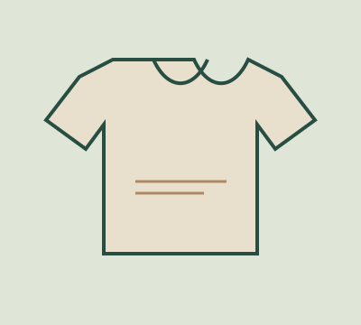
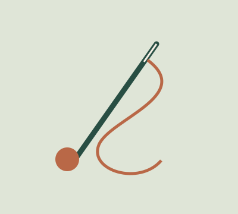
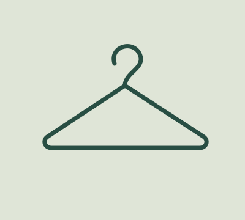
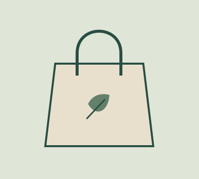

Cuidá lo que tenés
Leé la etiqueta, lavá cuando sea necesario y dejá secar al aire.

Leé la etiqueta, lavá cuando sea necesario y dejá secar al aire.

Un botón o una costura pueden ser el comienzo de una nueva historia.

Intercambiá lo que ya no usás. A otra persona le puede encantar.

Antes de comprar, pensá si lo necesitás y cómo lo vas a usar.
UNA PRENDA. MUCHAS POSIBILIDADES.
No necesitás renovar todo tu armario para cambiar tu manera de consumir. Podés empezar por usar esa camisa olvidada, arreglar un cierre o combinar distinto tus prendas favoritas.
Darles más tiempo de uso es una forma concreta de aprovechar los materiales y el trabajo que ya están en ellas. El siguiente paso puede ser pequeño. Lo importante es empezar.
Me sumo al cambioSeparar colores, revisar la etiqueta y secar con cuidado: una rutina simple para tus prendas.
Ver la guíaUn pequeño kit de costura y un poco de paciencia. No hace falta empezar por lo más difícil.
Ver la guíaOrganizá un intercambio con amistades y dejá que cada prenda encuentre una nueva historia.
Ver la guíaProyecto educativo · Usá un correo de ejemplo para probarlo.